|
PART II:
The Space Scene |
|
Step 14: Planet Two |
 |
We will be creating
our second planet completely from scratch. This is a lengthy step with lots of
directions, so read the directions carefully and follow along as we will cover
lots of great Photopea tools and techniques. The planet we are going to
create will resemble the planet Saturn,
complete with an awesome set of rings, but will have colorful bands of gas like Jupiter.
Yeah, I know, I can't wait to get started either.
ONE MORE QUICK REMINDER THAT IS A VERY LONG STEP.
IF YOU NEED TO STOP AND COME BACK TO IT AT A LATER TIME, SIMPLY USE File > Save
as PSD TO SAVE YOUR WORK.
- Open your Space13 file in Photopea
- Turn off the visibility of all of your current layer folders (you should see
the checkerboard)
- Insert a new layer and name it Planet2...
- Click the Ellipse Select Tool
The first thing we need is a circle that will serve as the shape of our
planet. For
everything to work correctly, we are all going to have to use the same sized
circle, so let's first make sure everyone is using the same measurements.
- Click Edit and then click Preferences (near the bottom of
the edit menu)...
This will open the Preferences window...

- Click the drop-down selection arrow next to Ruler Units
and select Pixels...
If Pixels is already selected then leave it alone
- Click the X to close the Preferences window
- Place your cursor near the upper left hand corner of your image
(but do not place it on the very corner or you will have problems later)...

- Press and hold the Shift key then click and drag down and to
the right until you have created an 800 pixel Wide x 800 pixel High circle...
Keep an eye on the black box pointed at with the red arrow above as this
will let you know how big of a circle you are creating (yes, this is a big
circle - you will resize it later) and release the mouse button and then
the Shift key
when you have an 800x800 circle (if you can't get it to go exactly to 800 px
don't worry about it - just get as close to 800 as you can, being 1 or 2
pixels off will not make a difference)
- Press D to set your foreground color to black
- Press Alt+Backspace to fill the circle
with black
Before we move on, a quick word of warning. This Step works much like the previous two Steps in
that you will need to keep the circle you just created selected for most of
this Step. To ensure that we do not mess up the original shape of our planet,
we will insert additional layers to place our bands of gas (and a few other
things) onto. If we lose our selection and need to get it back, we will
always have the Planet2 layer with its black circle to allow us to make a
selection the size of the planet (we actually have a few other uses for the black
circle, but we'll talk more about that later).
Your planet should remain
selected:
from direction 9 through direction 15,
from direction 67 through direction 71,
from direction 87 through direction 145.
If you happen to deselect your planet, you
can reselect it by pressing and holding the Ctrl key and clicking on
the Planet2 layer's thumbnail
- Make Planet2 the active layer
- Lock the Planet2 layer
- We will be using a gradient to simulate the bands of gas that wrap
around the surface of the planet, so click the Gradient Tool...
If you do not see the Gradient Tool, just right-click the Paint Bucket Tool
and select the Gradient Tool...
We will start by inserting a new layer to place the gradient that will become
our bands of gas onto.
- Insert a new layer, place it at the top of the layer stack, and name it
Gradient...
We are going to apply one of the rainbow gradients to get things started.
- Press Ctrl+D on the keyboard to deselect everything
- On the Gradient tool options bar, click the drop-down arrow
next to the gradient box...
This will open the gradient selection window...
- Click the Transparent Rainbow gradient to select it...
This gradient has 7 different colors built into it, which will be important to
us later when we apply the Gradient Map because Photopea will take those initial
colors and split them into multiple, individual lines of color. Keep working and
you'll see what I'm talking about.
- To apply the gradient to the image, click just
above your image and press and hold the Shift key on the keyboard as you
drag down to create a line stopping just below the bottom of your image...
Your gradient should now be applied to your image...
For everything to look as realistic as possible, we will need to create a
layer with multiple bands of gas. If you have worked with Photoshop before, you
know that this is a fairly easy process, but in Photopea it is a little more
complicated and involves multiple uses of Photopea's Gradient Map feature.
A Gradient Map is a simple adjustment, which is why it can be found in the
Adjustments menu, that you can apply to a color image to turn it black and
white. However, if we apply a color gradient as a Gradient Map, Photopea will
replace dark areas of our image with colors from the left side of our gradient
and light areas of our image with colors from the right side of our gradient.
OK, if you didn't understand that, don't worry. When we apply a Gradient Map you
will get a better understanding of how it works.
- Make sure the Gradient layer is still the active layer
- On the Menu Bar, click Image and then point at Adjustments and click
Gradient Map...
This will open the Gradient Map window...
Notice that the Gradient Map window has a black and white gradient chosen by
default (which means automatically). This is because, as we discussed earlier,
the Gradient Map adjustment tool was originally intended to simply turn a color
image black and white. Notice also that there is a drop-down arrow that will
allow us to select a different gradient.
- Click the gradient selection drop-down arrow...
This will bring up the gradient options...
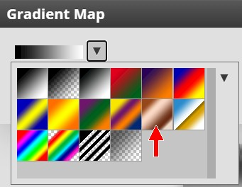
- Select the Copper gradient (pointed at with the red arrow above) -
notice that the gradient on your image should immediately change color...

- Click OK...
Notice that we now have multiple bands of color. Instead of the original 7,
we now have at least 10 separate bands of color. Yes, we only have light and dark
bands of a brownish color and no longer have a bunch of bright colors, but we didn't actually want a
rainbow color planet anyway - that's just not realistic. By applying a Gradient
Map, we have increased the number of color bands. We will add color back in
later that will give us a much more realistic planet surface that doesn't look
like we just dropped a rainbow into our space scene.
Let's apply a Gradient Map several more times to get a bunch of thin bands of
color.
- Click Image on the Menu Bar and then point at Adjustments
and click Gradient Map
- Click the gradient selection drop-down arrow and select the Copper
gradient again and click OK - your gradient should now look like this...
- Click Image on the Menu Bar and then point at Adjustments
and click Gradient Map
- Click the gradient selection drop-down arrow and select the
Transparent Rainbow gradient and click OK - your gradient should now look like this...
- Click Image on the Menu Bar and then point at Adjustments
and click Gradient Map
- Click the gradient selection drop-down arrow and select the
Transparent Rainbow gradient again and click OK - your gradient should now look like this...
Notice that we now have lots of lines of color. Notice also that they are all
different thickness - this is good and will help to add realism to our planet.
- Click Image on the Menu Bar and then point at Adjustments
and click Gradient Map
- Click the gradient selection drop-down arrow and select the Copper
gradient one final time and click OK - your gradient should now look like this...
We are going to stop here because we've got some nice lines of various width.
You may be wondering why we are going with this rather dull copper color as our
final gradient. Well, as I said before, if we use the gradient from three
directions ago with the bold reds, pinks, purples, and so on, we will make a
planet that doesn't look realistic at all. By ending with a copper colored
gradient, we have colors that actually exist out in space. Don't worry, we are
not going to leave it like this. Our next task is to give our planet a little
color, but just a little.
- Insert a new layer at the top of the layer stack and name it Gradient
Color...
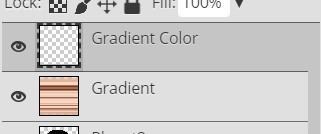
- Make sure the Gradient tool is still selected
- On the Gradient tool options bar, click the drop-down arrow
next to the gradient box...
- Select the Spectrum gradient..
- Apply the gradient to your image the same way you did in direction 19
We want to give our multi-line gradient just a touch of color, so let's lower
the Opacity of the Gradient Color layer.
- On the Layers panel, decrease the Opacity of the Gradient Color layer to
15%...
Notice that your bands of gas now have a slight coloration to them...
At this point, our lines are very well defined and solid, so let's make a
few quick adjustments that will soften up our lines a little so they look
more like bands of gas on a far-away planet.
- Right-click the Gradient Color layer and select Merge Down - your two
gradient layers should now be one layer named Gradient Color (can you
explain why it is called that?)...
- On the Menu Bar, click Filter and then point at Blur and
click Motion Blur...
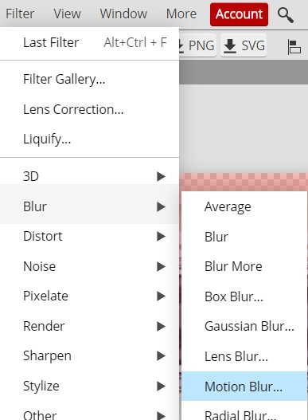
This will open the Motion Blur window...
- Set the Angle to 90 and the Distance to any number between 15 and 20 -
I'm going to use 15...
The higher the Distance you use the blurrier your image will be. Being extra
blurry is not necessarily a bad thing. The faster a planet spins the blurrier
its clouds will be. Don't go above 20, because if the clouds are too blurry the
distortions we are going to be adding next will not look right.
- Click OK - your gradient should now look something like this...
So far everything is looking pretty good, but if you look at real gas
giants out in space (like Jupiter and Saturn) you notice that they have
distortions in their bands of gas...
In other words, they do not have clean, straight
lines across their surfaces. Let's take a quick minute to give our planet a little
character by distorting the lines just a bit.
- Click Filter then point at Distort and click Ripple...
to open the Ripple window...
- Set the Amount to something between 200 (any less and you
won't be able to see the ripples after you resize your planet) and 300 (any more and the surface just begins to look like mush) - I'm going to use
250 - and leave the Size set to Medium
- Click OK - you should now have something similar to this...
Our lines no longer look perfect, but they are still pretty straight across
the planet. Let's add some waviness to our clouds.
- Click Filter then point at Distort and click Wave to
open the Wave window...
- Use the above settings as a starting point, and adjust the numbers until
you get something that you like (avoid simply using my numbers as you want
your planet to be unique and if everyone uses the same numbers then all
of the planets will look the same), but keep the following in mind:
- Number of Generators determines how large the
waves are - setting this number too high will make your planet look like a
cartoon, so try each number between 1 and 5 to see what gives you a result
you like (your waviness should look something similar to the image above)
- Set Min Length to 1
- Set Max Length to any number
between 400 (closer together waves) and 600 (more spread out waves)
- Set Min Ampl. (short for Amplitude) to 1
- Set Max Ampl. to any number
between 20 (shallow waves) and 40 (deep waves)
- Set Scale X and Scale Y to 100%
- Set Type to Triangle
- Set Undefined Areas to Wrap Around
- Leave the Randomizer Seed setting alone
I'm going to use the numbers in the above image - keep in mind that we will be resizing our planet later in this step so
it is ok if the waves are a little exaggerated right now, they will look
fine when we resize
- Click OK
You should now have some nice, wavy, slightly distorted lines that more
closely resemble the actual surface of a gas giant...
Keep in mind that since you (should have) used different settings than me
that your bands of gas will not look exactly like mine.
Scroll back up to the picture of Jupiter and Saturn and notice that the actual
surface of both planets have a lot more distortions on their surface than the
planet we are creating here does. Let's take a quick second to add in some additional variations to
our clouds (and learn some new tools in the process).
- Click Filter and then click Liquify...
This will open the Liquify window...
Yes, it's a big window
- In the Liquify window, click the Smudge tool...
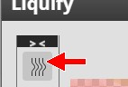
Hint: it is on the left at the top
The Smudge Tool does exactly what the name says: it smudges. It works very
much like what happens when you stick your finger in a dab of paint and move
it around - the paint smudges (sorry, really no better way to say it).
- Roll the mouse wheel up until the Zoom level is 100%...
Hint: it is on the left at the bottom
- Under View Options, click the Background checkbox to turn
it on and set the Opacity to 90...
This will allow us to see the black circle of our planet behind our bands of
gas...
Being able to see where our planet sits is helpful because it lets us know
where to make the changes in the next few directions. Everything outside the shaded
circle area will be deleted, so don't bother making adjustments to the lines outside
the shaded circle.
- On the right side of the Liquify window, set the options to match the
image below...
- Click and drag quickly in your clouds in various directions and at
various lengths to simulate variations in the surface gas...
DO NOT go crazy with your smudges - try to space them out as we will be
decreasing the size of the brush in the following directions and adding
additional smudges of various sizes to give our planet a lot more character
When creating the smudges, if you click and drag quickly you will pull the
color where you click a longer distance than if you click and drag slowly, which
will tend to blend together the colors you drag over.
- Place smudges around your image (but don't go CRAZY) - if you need to
reposition your planet so you can see a different area, you can press and hold the spacebar and then click
and drag to move your planet around
- Press the [ key on your keyboard twice to decrease the size of
your brush from 35 to 25
- Add in some additional smudges - again, don't over do it
- Press the [ key on your keyboard twice to decrease the size of
your brush from 25 to 15
- Add in some additional smudges - this time you can make as many as you
like (you can even draw onto some of the previous smudges)
- Press the ] key ten times to increase the brush size to 80
- Select the Shrink tool...
This tool pulls whatever is within your brush circle
in to the center of the circle
- Change the Rate to 30...
This controls how quickly the surrounding area is pulled into the center of
your circle - if this is set too high then you pretty much have no control
over how much Shrink you apply
- Click around your planet in a few different places - this tool
works great to repair any areas that you went crazy on - to add some
additional distortions to your clouds (keep in mind that the longer you
press the mouse button on one spot the more Photopea will draw the
surrounding area into your circle) - once again, do not go crazy with this
The Shrink tool is a great way to create thinner bands of gas...
Simply click and hold the Shrink tool as you drag along a band
of gas to thin it out.
- If you want to create smaller areas of shrinkage, simply decrease the
brush size and create more shrunken areas
Also available in the Liquify window is the Blow tool...
It functions the opposite of the Shrink tool. When using the Blow tool,
anything inside the brush circle will be pushed out from the center toward the
edges. If you have areas that you want to be slightly more spread out, you can
place the Blow tool over that area and click multiple times, or click and hold
to slowly apply the Blow.
- Look over your planet and decide if there are any areas you would like
to spread out and use the Blow tool on those areas - be extra careful not to
over use the Blow tool because the more you use it the more unrealistic your
planet will look (in other words, don't go crazy with this)
- Look back over your planet and make sure that you are happy with
all of the Liquify changes you have made - you should have something similar to the image
below...

When you are happy with your planet, click OK to exit the Liquify window
The next thing we need to do is get rid of all of the extra gas bands that are
around our planet. This is a quick and easy edit.
- Press and hold the Ctrl key and click on the Planet2
thumbnail...

To select the planet shape...
This will select all of the non-transparent pixels on the layer - in other
words, it selects the black circle (see, I told you the Planet2
layer would come in handy)
- On the Menu bar, click Select and then click Inverse
- Make sure the Gradient Color layer is still selected
- Press the Delete key on the keyboard, or click Edit on the Menu bar and
then click Clear...
The area around your planet should now be gone...
- Press Ctrl+D on the keyboard to deselect everything
What might be awesome at this point is to add in a nice storm to simulate
something like the
Great Red Spot on Jupiter...

This spot on Jupiter is actually a huge hurricane that has been
churning for decades, maybe even centuries.
Let's start by creating a selection to contain our storm.
- Click the Ellipse Select tool - make sure Feather is set to
0...
- Draw an oval over the empty area of your image (NOT on your planet) that is
200px
wide by 100px high...

Don't waste a lot of time trying to get your selection to be exactly 200x100 -
just get close
- Determine where on your planet you would like your storm to be - it
should on the same side of the planet as your sun (in other words, if you
put your sun on the right side of your image like I did then you want your
storm to be on the right side of your planet since we are going to shade the
other side later in this step and you want your storm to be visible) and looks best when placed in darker bands of color
(if you place it over light colored clouds it will be difficult to see when
you resize your planet)
- Click inside the selection (your cursor should look like this:
while over the selection) and drag it onto the area of your planet that you
chose...
- Click Filter then point at Distort and click Twirl...
This opens the Twirl window...
Note that the preview of the planet shows what the twirl will look like when
applied
- Set angle to 300 degrees as in the image above
- Click OK
- Press and hold the Shift key and press the right arrow key 10
times (or press the left arrow key 10 times depending on how close to
the edge of your planet you placed the first twirl) - this will move your
selection 100 pixels to the right...
Using just the arrow keys to move something left or right (or up and down)
will move the object 1 pixel each time you press the arrow key. But
by holding down the Shift key, we force Photopea to move
the selection area 10 pixels with each press of the arrow key. In this
way, we can precisely control how far we move selections and objects, but don't
have to press the arrow key a hundred times to get it where we want.
- Reapply the Twirl filter (use the same settings as before) - you should now have something like this...
- Press and hold the Shift key and press the left arrow
key (or the right if you used the left one earlier) five times to
move your selection oval 50 pixels back toward your
original twirl so it sits between the two twirls you just
made...
- Click Filter then point at Distort and click Twirl to reopen the Twirl
window, but this time set the angle to 400 degrees...
This should combine the first two twirls into one large twirl...
- Press Crtl+D to deselect the oval
You may be wondering why we didn't just create one large twirl at an angle of 400
and be done with it. Remember that the bands of gas on our planet (and on the
real gas planets in our solar system) are created due to the planet spinning
really fast and, because there is no solid ground to provide friction, stretching the gas
across the surface of the planet. Because of this, a simple round storm would
look out of place. By applying two small twirls and merging them into one large
twirl we are able to create a storm that is definitely noticeable, but that
blends into the surrounding clouds and looks stretched out so that it could
actually be on our planet and not look like some weird artificial storm we
stuck on same fake planet using Photopea (and now you know why the Great Red
Spot on
Jupiter is an oval...you're welcome).
Let's make one more minor adjustment before we move on. If you look at the
Great Red Spot on Jupiter in the image above you will notice that the center is
far less defined (it's blurrier) than the center of our storm. We have a
quick fix we can use to soften up the center of our storm.
- Click the Smudge Tool...
You may have to right-click the Blur Tool and then select the Smudge Tool...
- Choose the Soft Mechanical 24 pixels brush and make the Size 70 px
- Click in the center of your storm and move your mouse back and
forth slightly (do not go too far or you will begin to remove the oval shape
of the storm) until your center is well blended - it should look something
similar to the image below...
Now let's give our planet a quick spherize so that the bands of gas seem to be
moving around an actual round surface instead of sitting across a flat surface
like
they actually do. We will do this the same way we did it on the first planet. We
need to first reselect our planet shape.
- Press and hold the Ctrl key and click on the Planet2
layer's thumbnail...
- Make sure the Gradient Color layer is the active layer
- Click Filter then point at Distort and click Spherize
- Set the Amount to whatever value between 50 and 100%
that you think looks best - I'm going to use 70%...
- Click OK
You should now have an awesome looking gas planet. Since this planet is covered with all kinds of strange gasses and doesn't
have clouds like we do on earth, we don't have to worry about creating cloud
layers and just need to apply a nice glow to
the Planet2 layer.
- Lock the Gradient Color layer
- Unlock the Planet2 layer and make it the active layer
- At the bottom of the Layers panel click the eff icon...
eff is short for Effect
- Click Outer Glow...
This opens the Layer Style window with Outer Glow selected
- Make the following adjustments:
Blend Mode: Normal
Opacity: 75%
Noise: 0%
Technique: Softer
Spread: 0%
Size: 70 px
Leave all of the Quality settings alone
- Click on the title bar for the Layer Style window...
and drag it so that you can see your planet
- Click the Set color of glow box...
This opens the Color Picker window
- Click on the title bar for the Color Picker
window and drag it so that you can see your planet
- Place the cursor (it should be a plus sign right now) on an area of
color within your planet that you like - I'm placing mine here...
- Click to select your chosen color - notice that the glow around
your planet is now your chosen color
- Click OK in the Color Picker window
Let's give our planet a slight tilt.
- Make the Gradient Color layer the active layer
- Unlock the Gradient Color layer
- Click Edit on the menu bar and
then point at Transform and click Rotate...
- Place your cursor just off one of the corners until you get the
curved double-headed arrow...
- Click and drag to rotate your planet - how much you rotate
it is up to you (remember that you can always flip and rotate it more later)...
- Press the Enter key on the keyboard to apply the transform
We now need to add in a shadow. With Planet 1, we started with a full black
circle and erased part of it until we had a nice shadow. For this planet, let's
use a different method.
- Lock the Gradient Color layer
- Insert a new layer at the top of the layer stack and name it Shadow...
- Turn on the visibility of the Star Field layer group (the black
background will allow us to see our outer glow better)
- Make sure your planet shape is still selected (if it is not,
Ctrl+click on the Planet2
layer's thumbnail to select your entire planet) and notice that the outer
glow is not included in the selection...

We are going to add a shadow on top of the main body of our planet first, and
then we will deal with removing the outer glow on the shadow side of the planet.
Trust me - this is going to work.
- Press D on the keyboard to make black your foreground color
- Choose the Brush Tool
- Change the brush selection to Soft Mechanical 24 pixels, and change the Size
to 500 px
- On the Brush Tool options bar, make sure
Opacity (the depth of color)
and Flow (the amount of color you drop each time
you stroke) are both set to 50%...
- Zoom out so you can see your entire planet and some of the area around
it
- Make sure the Shadow layer is the active layer and click
on one side of your planet and drag around to the other side...
Keep your cursor half-on your planet as in the image above and make sure you
are shading the side of the planet AWAY from the sun (notice
how the image above indicates that my Sun is in the upper right-hand corner of
my image so I'm shading the bottom left of my planet) - you should now have something like this...
Notice that you have a slight shadow - yes, it is supposed to be that
subtle, you will make it darker in the following directions
- Press the ] key on the keyboard once to increase the size of your
brush to 600
- Repeat direction 118, but put slightly less of the cursor
on your planet - your shadow should now be slightly darker...
- Press the ] key on the keyboard once to increase the size of your
brush to 700
- Repeat direction 118, but put slightly less of the cursor
on your planet
- Press the ] key on the keyboard once to increase the size of your
brush to 800
- Repeat direction 118, but put slightly less of the cursor
on your planet
- Press the ] key on the keyboard once to increase the size of your
brush to 900
- Repeat direction 118, but put slightly less of the cursor
on your planet
- Press the ] key on the keyboard once to increase the size of your
brush to 1000
- Repeat direction 118, but put slightly less of the cursor
on your planet - you should now have a nice, soft shadow...
Notice that because the planet is selected that we only drew over the planet
so that the stars in the image are still
shining just as bright as they were before we began this Step
- Lock the Shadow layer
Now let's deal with the outer glow. Because the outer glow is a layer style
and not something we actually drew on our planet, we can't simply erase the
outer glow. However, since we applied the outer glow to the Planet2 layer (which
you'll remember is just a black circle), if we remove part of the black circle
on the shadow part of the planet, we can push the outer glow back so that it is
not visible. If that made no sense at all, don't worry. After we make this
change you will understand.
- Make the Planet2 layer the active layer
- Click the Eraser Tool and use the Soft Mechanical brush
with a size of 500 pixels...
- Click and drag the same way you did in direction 118 to
remove the outer glow on the shadow side of the planet - you should now have
something that looks like this...
OK, so I said that we can't directly erase the outer glow because it is
applied using a layer style, so why does it appear that we were able to erase it? Well, if we turn off
the Shadow and Gradient Color layers we see this...
This is what is left of our Planet2 black circle after we erased the part on
the shadow side in the last direction. Notice that the outer glow is actually
still there. It's not as solid and bright as it is around the other side of the
planet because we used an eraser with a soft edge, but it is still there. We
have basically just pushed it back so that it is not visible on the shadow side
of our planet anymore. With the Shadow and Gradient Color layers above our Planet2 layer,
people viewing our image will never know that the outer glow on the shadow side
is there.
Things are looking pretty good, but at this point all of your planets look
pretty much the same, which is pretty boring. Let's take a second to modify the color of
your
planet so that everyone has a unique planet. We could simply take our Planet2
layer and edit the colors directly, but doing so would permanently change our
planet. If we close our image or continue on with Step 15,
we would be
unable to get our planet back to the way it currently looks or to modify any changes
we made. Luckily for us, Photopea offers a way to modify a layer without doing
so permanently. This can be done with an adjustment layer.
Adjustment layers are layers that sit over other layers and make some sort of
change to them. The good thing about adjustment layers is that unlike
actually changing a layer, changes made using adjustment layers can be
quickly and easily undone (by deleting the adjustment layer) or easily
changed (by modifying the adjustment layer).
We need to give our planet a color scheme we like at this point because
later we will be adding a ring system and will need to apply color to the
rings based on the color of our planet's swirling clouds. We are going to
need a new layer that sits above our Gradient Color layer.
- Turn off the visibility of the Shadow layer - this will allow you
to
better see what impact the color change is having on your planet
- Make Gradient Color the active layer
- At the bottom of the Layers panel click the New Adjustment layer icon...
- Click Hue/Saturation...
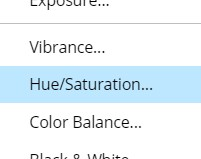
to open the Hue/Saturation Properties panel...
- Drag the Hue slider (red arrow in the image above) left and right and keep an eye on your planet - notice
your planet will actually change colors - and stop when you get to a color
scheme you like...
No, your planet does not have to look like mine...again, choose something that
YOU like
- Drag the Saturation slider left and right and determine if you want
your colors to be more or less vivid...

I made mine slightly more vivid
Take a look at your Layers panel and notice that a new layer has been
added...
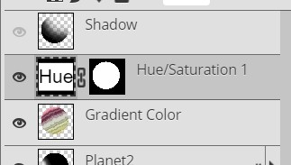
This adjustment layer currently impacts all layers sitting under it, so we need to limit its
effect to only the layer immediately below it.
- Right click the Hue/Saturation 1 layer (the layer shown above) to
bring up a
pop-up menu
- Click Clipping Mask...
A
Clipping Mask is just a fancy way to say that
any adjustments we make will be applied only to the
layer directly below the current layer. Photopea has a
quick and easy way to let us know that we are using a Clipping Mask. Look at
your Layers panel...
The tiny black downward pointing
black arrow that tiny red indicator arrow is pointing at indicates that the Hue/Saturation
1
layer is a Clipping Mask layer that is impacting only the layer immediately
below it.
Adjusting the Hue/Saturation
slider is the quickest way to make changes to our planet's color, but we have a
few other ways to make modifications.
- Locate the Colorize checkbox near the bottom of the Hue/Saturation
Properties panel...
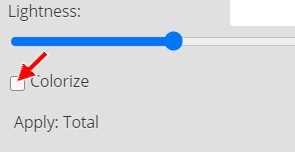
Click it to turn on Colorize - notice that your planet should now be
tinted variations of one color...
At this point you might be thinking: huh, what's going on? Colorize is a
great tool to use when we want to add color to an image that has no color (such
as a black and white image). Using it now causes our planet to be
monochromatic (a variation of one color). You have a choice to make now
about whether you like the monochromatic look or if you prefer the multi-colored
bands.
- Decide if you like the monochromatic look (if you do, simply go to the
next direction) or if you prefer multi-colored bands (simply click back on the
Colorize checkbox to turn the Colorize option off - this is what I'm going to
do)
Note that if you want a different monochromatic color, you can drag the Hue
slider
left/right again to get different colors.
- Click the Properties shortcut icon to collapse the Properties panel...
We have one more thing we can do to ensure we have a one-of-a-kind planet.
- Change the blending mode...
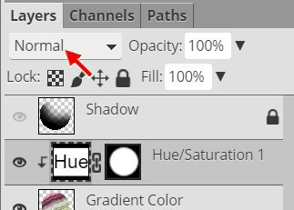
of the Hue/Saturation adjustment layer - try each blending mode until you find
one that you like (do not use any that make your planet look unnatural - such
as Color Burn, Color Dodge, Hard Mix, and several others) - once you
find a setting you like leave it set to that (you are certainly free to use
the default Normal setting if you like it best)
I'm going to leave my blending mode set to Normal.
Keep something very important in mind at this point - if you do not like any
of the
adjustments you have made you can always make changes to your adjustment layer.
Take a look at your Layers panel and locate the Hue icon (red arrow below)
located on your Hue/Saturation 1 layer...
This icon indicates that the layer is modifying the
Hue/Saturation of our image. By the way, if you are wondering what that
white circle inside the black box to the right of the
Hue/Saturation icon is for, it is there to indicate what specific parts of our
image are being adjusted. Since we had our planet shape selected when we
applied this particular adjustment layer, it is only being
applied to the circle, or what is in white. If we want to apply the
adjustment to the entire image, we would simply apply it with nothing selected
and our adjustment layer icon would look like this...
The white box indicates that the adjustment is being
applied to everything. To make changes to your adjustment layer, you simply need to double-click on the Hue icon to get the
Hue/Saturation Property panel from direction 136 to pop back up. This is the
real power of adjustment layers - we can make tons of changes to our image
without having a direct impact on our layers.
So far everything is looking pretty good, but let's take this planet to the next
level by adding in some Saturn-like rings. Our planet is rather large now and it will be
difficult to create rings large enough to go around it, so let's make our planet
a little smaller.
- Press Ctrl+D on the keyborad to deselect everything
- Make the Shadow layer the active layer and unlock it
and turn on its visibility (click the eyeball)
- Press and hold the Shift key on the keyboard and
click the Planet2 layer to select all four layers...
- Make sure all 4 layers are unlocked as in the image above (if
some of your layers are not unlocked, you may need to unlock them
one at a time and them reselect all four layers)
- Click Edit and then point at Transform and click Scale to enter
resize mode - you should
notice a box around your planet
- In the Transform options bar, change both the W and H
settings to 50%...
- Click the Commit Transform button at the far right end of the
Transform options bar...

Now we have a smaller planet that we can better deal with...
- Insert a new layer at the top of your layer stack and name it
Rings
- Press D on the keyboard
- Turn off the visibility of all layers except the Rings layer
- Fill the Rings layer with black (there should be no selection,
just fill the entire layer with black)
- Click Filter then point at Render and click Clouds
- Click Filter then point at Distort and click Twirl
- the Twirl window will open...
- Change the Angle to 999 as in the image above
- Click OK
- Repeat the above 3 steps three more times - a
quick and easy way to repeat the last filter that was applied is to click
Filter on the Menu bar and then choose Last Filter...
Your image should now look like this...
- Click the Ellipse Select tool and make sure the Feather
option is set to 20px
- Press and hold the Alt key and then press and hold the Shift
key (Shift gives us a circle
while Alt forces the point we click to be the center of our circle)
so that you are holding both keys pressed at the same time, and then
click in the center of your twirl and drag to create a selection similar to
the one below...
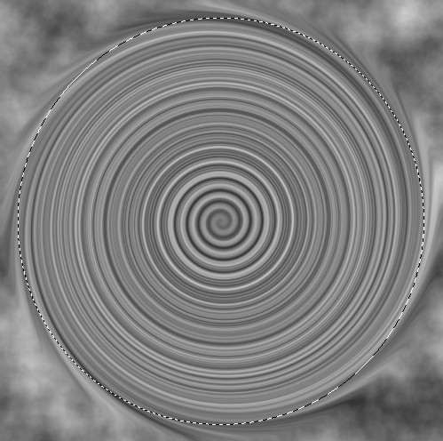
Then release the Alt and Shift keys and the mouse button
- Click Select then click Inverse
- Press the Delete key to remove the twirl outside the selection - notice that you should have a nice soft edge on the remaining selection (if you don't,
delete the Rings layer and go back to direction 161 and make sure the feather is set to
20 px)
- Press Ctrl+D to deselect
- Change the Feather to 0 px
- Press and hold the Alt key and then press and hold the Shift
key so that you are holding both keys pressed at the same time, and then click in the center
of your twirl and drag to create a selection similar to the one below...
Don't waste a lot of time trying to make your selection perfect, just get
close to the selection above
- Release the Alt and Shift keys and the mouse button and press the Delete key to remove the twirl inside the selection
- Press Ctrl+D to deselect - you should now have something similar to the image below...

- Turn on the visibility of your Gradient Color and your
Hue/Saturation 1 layers (this
will make it easier to tell how wide to make the rings)
- Select the Rings layer and click Edit then click Free
Transform...
- Use the top (or bottom) center resize handle to squish your rings into
an oval, and then adjust their width so that they are slightly wider than your planet...
- Tilt your rings so they are at
the same angle as your gas bands...
- When you are happy with your rings press the Enter key to
apply the transform
It is important that your rings sit at the same angle as your bands of gas.
Quick astronomy lesson here: for planets that have rings, they are generally
formed when two orbiting bodies, like moons, smash into each other and break
apart (they can also be formed by a passing object being captured by the
planet's gravity and broken into little tiny pieces like an elephant stepping on
a chocolate chip cookie...which we all know is a waste of a perfectly good
cookie). The pieces are then scattered around the planet due to the planet's
spin. Thus, the rings are almost always distributed in the same shape as the
planet's bands of gas. In other words, your rings should sit at the same angle
as your bands of gas.Our rings are really smooth, so let's make them look a little more rock-like.
- Click Filter then point at Noise and click Add Noise...
- Make your settings match those below...
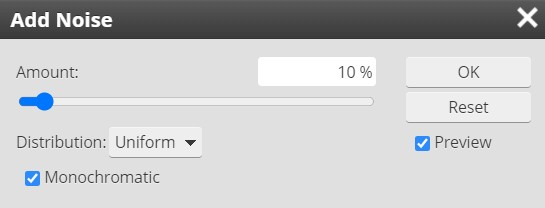
- Click OK - your rings should now look something like
this...
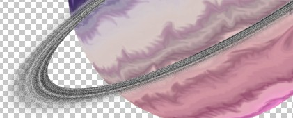
Notice that your rings now have a slight grainy texture to them, almost like the
rings are composed of tiny rocks floating in space instead of just big smudge
around the planet. And while our rings do look more realistic now, we still have
a small issue. Planet with real rings out in space have light bouncing off their
surface which gives their rings a slight hint of color. Let's take a moment and
give our rings a slight tint.
- Click Image and point at Adjustments and click
Hue/Saturation and change the settings so that the rings have a nice,
slight tint to them (you will need to drag the Saturation slider to right
first to apply some color, and then adjust the Hue slider to find a color
that matches your planet) - remember that since our rings are originally
black and white that you will need to turn on the Colorize option in the lower
left-hand corner of the Hue/Saturation
window...
Your rings should now have some color...
Everyone has different colors in their planet, so I can't tell you exactly what settings to use - just play around with them until you get something you like
(remember that we are going for just a slight amount of color, so be sure
that you are not applying too much color by keeping the saturation value
low)
- Click OK to exit the Hue/Saturation window
- Turn on the visibility of your Shadow and Planet2
layers, as well as your Starfield layer folder (you still want the Rings layer
to be selected, just make sure you can see the Shadow layer so you know
where to erase the rings)
- Click the Eraser Tool and use the Soft Mechanical brush
with a size of around 200 pixels and erase the part of the rings that are
behind the planet, and remove some of the rings that are in the planet's
shadow (the rings will look more realistic if you leave some slightly visible in the
shadow - this can be easily done by turning the Opacity and
Flow settings in the Eraser Tool options bar down to 50% each and gradually
removing the rings until you have something you like)...
- Feel free to increase the size of the brush as needed to get a nice set of
rings in the shadow, just be sure that your rings do not cover up your storm
(notice that my rings are on the top part of my planet while my storm is safely on
the bottom)
We have one more quick thing to fix before we move on with our lives. Take a
look at my outer glow in the above image. Notice that while my planet has a
definite purplish tint to it that my outer glow is still the yellowish color
that it was before I adjust the Hue of my bands of gas. It looks a little odd at
this point, so let's take a quick second and make an adjustment to our outer
glow (and cover some great info on how to adjust an existing layer style!) so
that the color more correctly matches our planet.
Keep in mind that depending on how you set the color of your planet, that your
outer glow may not need to be adjusted because it is already a good color. If
that is your situation, follow along with the directions below anyway just so
you have experience adjusting an existing layer style.
- On the Layers panel, double-click the eff icon
on the Gradient Color layer...
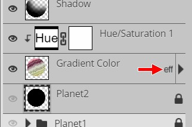
This will open the Layer Style window
- Click the Outer Glow selector...
- Click the Set color of glow box...
- Click the plus sign cursor on an area of color on your planet that
you want to your outer glow to be
- Click OK to exit the Color Picker
- Click OK to exit the Layer Style widow
Your planet should now have a nice glow that fits your overall color
scheme...

In the image above, I used the color in the wide, center band of
gas as my outer glow. By using a layer style instead of making a change directly to
our Gradient Color layer, we are able to make changes whenever we need without
messing up our original colors.
Our final task is to get all of our Planet2 layers into a layer
folder and find a nice home in our space scene for our wonderful
Jupiter/Saturn hybrid planet to sit.
- Select all five of the layers that make up your second planet...

- Click
the New Folder icon
- Rename the new layer folder Planet2...
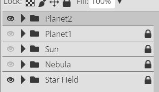
- Click Edit then point at Transform and click Scale
and resize your planet (remember to hold the Shift key as you drag one of
the corners to resize both the height and width at the same time) to something that fits your scene, then move it where you would like it to be
(remember that you can still use Edit - Transform - Flip Horizontal/Vertical
to reposition your planet if you need to, just remember that you may need to
rotate it again to keep the shadow away from the sun)
Be sure you are not placing your amazing Planet2 on top of any of your large
stars.
- Lock all of your layer folders
With all of your layer groups and layers turned on, you should now have a space
scene similar to the one below...
The absolute best part about how we built out Planet2 is that once we get all
parts of our space scene turned on, if there is something that we don't like we
can easily make an adjustment. For example, comparing my two planets I see that
the outer glow on my Planet2 is so much larger than my Planet1 that it looks out
of place - the fix for this is easy.
- If the outer glow of your Planet2 is too bright, simply unlock the
Planet2 layer folder
- Expand the contents of the Planet2 layer folder by clicking the
expand folder arrow...
To show the contents of the layer folder...
- Select the Planet2 layer (remember that this is where the outer
glow lives)
- Decrease the Opacity of your Planet2 layer until your outer glow
fits better into your scene - I set mine to 65%...
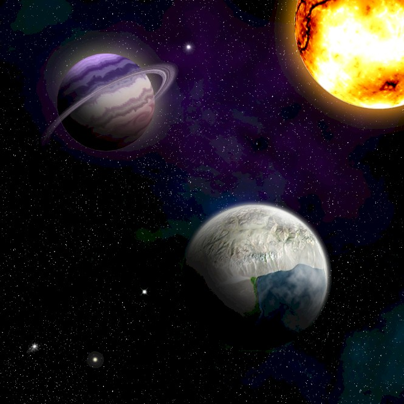
- Collapse (by clicking the expander folder arrow again) and
lock your Planet2 layer folder
So far it looks pretty good, but there are all kinds of other things floating
through space such as comets and asteroids, so let's add in some of those.
- Click File and then click Save as PSD
- Name the file Space14
01 |
02 |
03 |
04 |
05 |
06 |
07 |
08 |
09 |
10 |
11 |
12 |
13 | 14 |
15 |
16 |
17 |
18 |
19 |
20